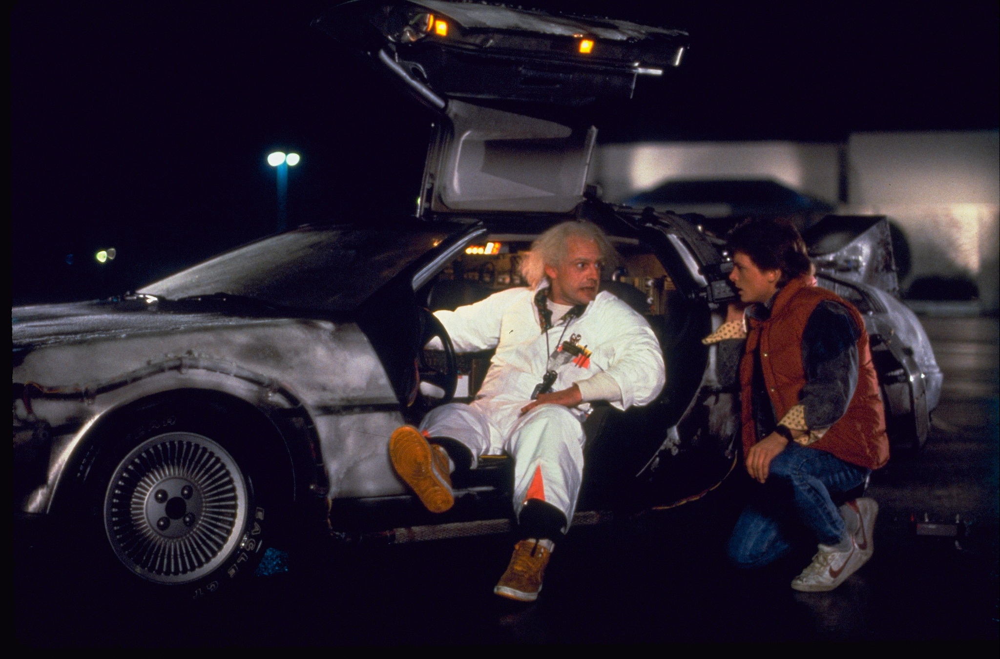

Volver Al Futuro
Back to the Future (Regreso al Futuro en España y Volver al Futuro o Vuelta al Futuro en Hispanoamérica) es una película de ciencia ficción y comedia dirigida por Zemeckis y estrenada en1985. La película trata sobre un adolescente llamado Marty McFly que accidentalmente viaja al pasado y pone en peligro su propia existencia en el futuro. La película tuvo dos secuelas, Back to the Future Part II> (1989) y Back to the Future Part III (1990) formando una trilogía.
Sinopsis
El adolescente McFly amigo de Doc, un científico que ha construido una máquina del tiempo. Cuando los dos prueban el artefacto, un error fortuito hace que Marty llegue a 1955, año en el que sus padres iban al instituto y todavía no se habían conocido. Después de impedir su primer encuentro, Marty deberá conseguir que se conozcan y se enamoren, de lo contrario su existencia no sería posible.